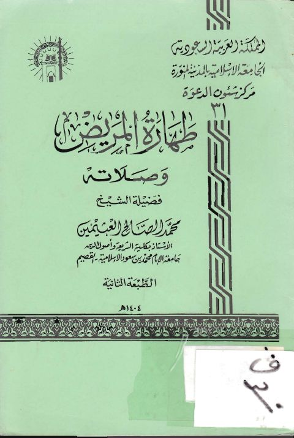

Downloads need an internet connection.
طهارة المريض وصلاته
Authors: محمد بن صالح العثيمين
Publishers: الجامعة الإسلامية مكتب شؤون الدعوة
**▫️ العنوان: طهارة المريض وصلاته** ▪️ المؤلف: #محمد_الصالح_العثيمين ▫️ الناشر: #الجامعة_الإسلامية_مكتب_شؤون_الدعوة ▪️ تاريخ النشر: 1404هـ 1984 م ▫️ بلد النشر: المدينة المنورة، #السعودية ▪️ الطبعة: 1 ▫️ عدد الأجزاء: 1 ▪️ الصفحات: 7 ▫️ نوع الوعاء: #كتاب ▪️ التصنيف الرئيسي: #الفقه_وأصوله ▫️ التصنيف الفرعي: #الصلاة ۪